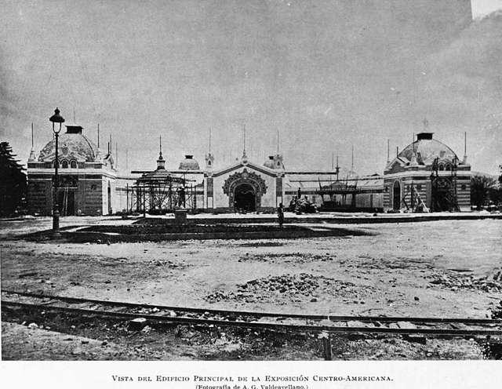
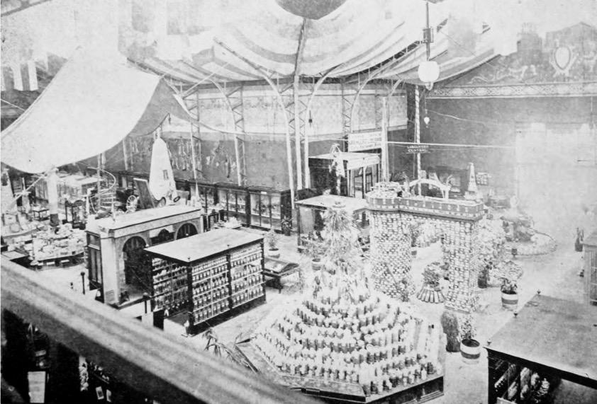
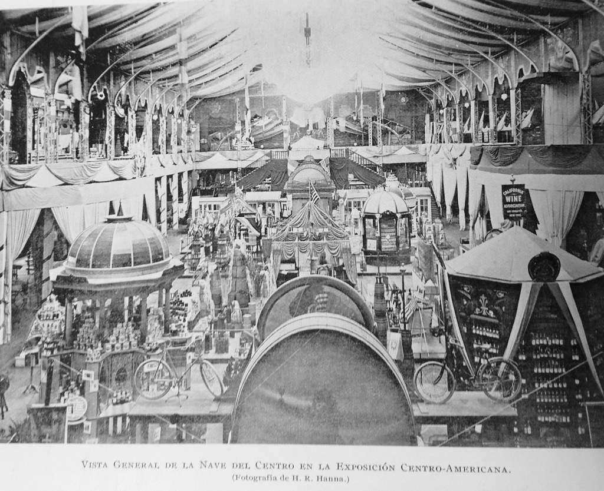
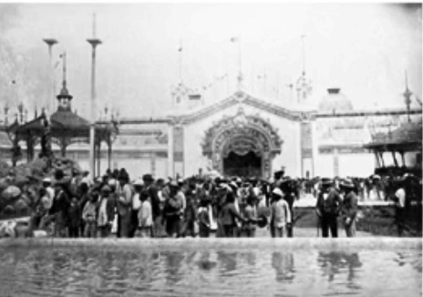
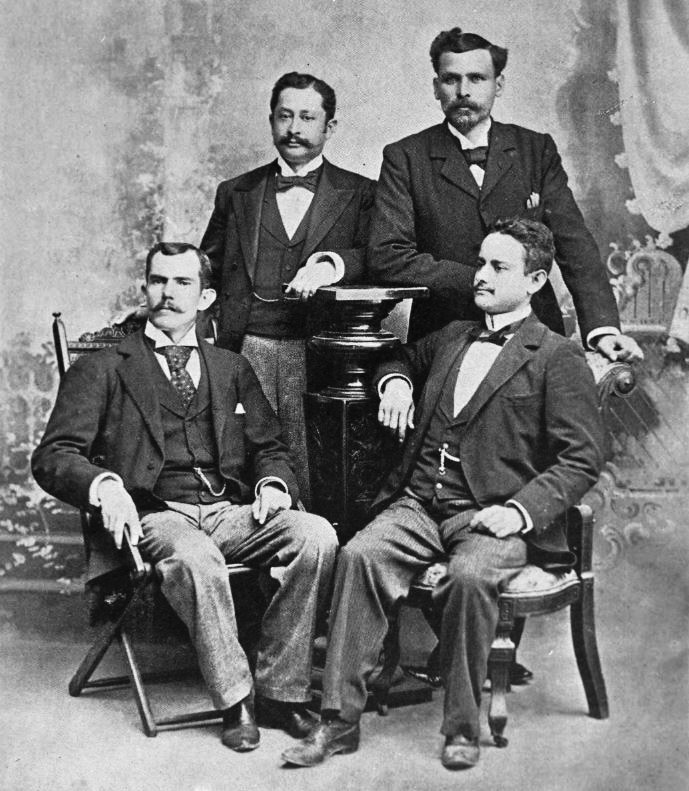
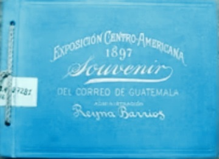

Imágenes históricas de la Exposición Centroamericana de 1897 en Guatemala

1897 • Alberto G. Valdeavellano

1897

1897 • Gobierno de José María Reina Barrios

1897

1897

1897
Todas las imágenes son de dominio público y provienen de Wikimedia Commons y archivos históricos guatemaltecos.